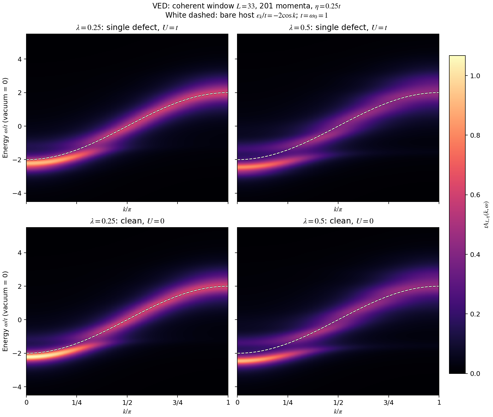
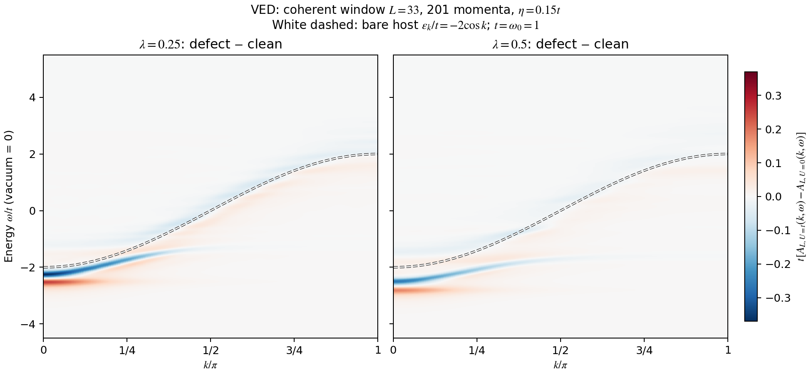
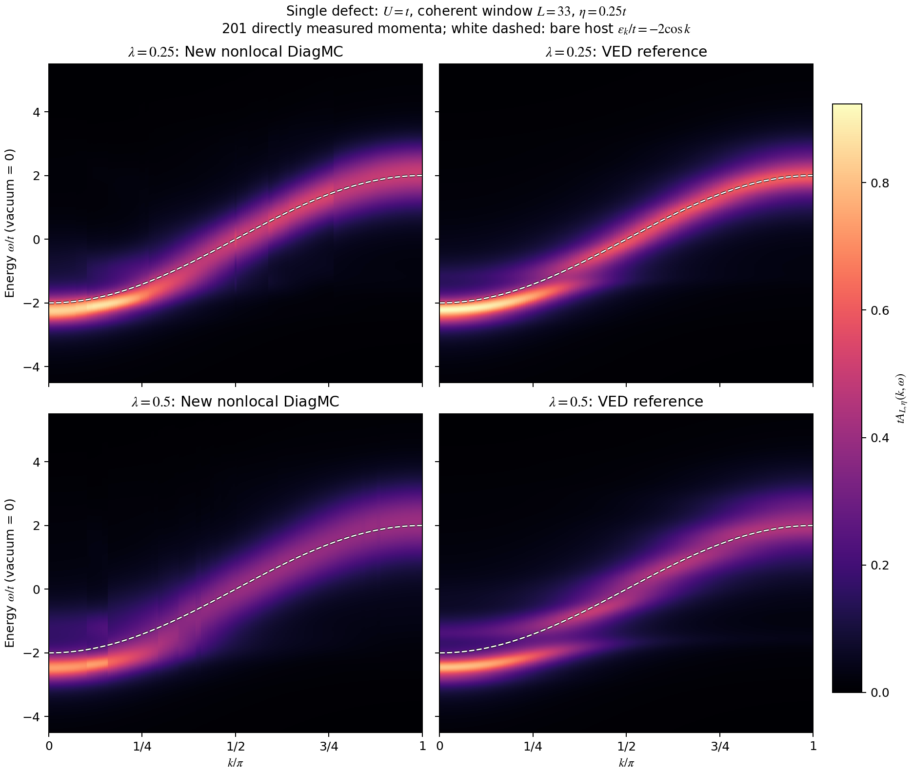
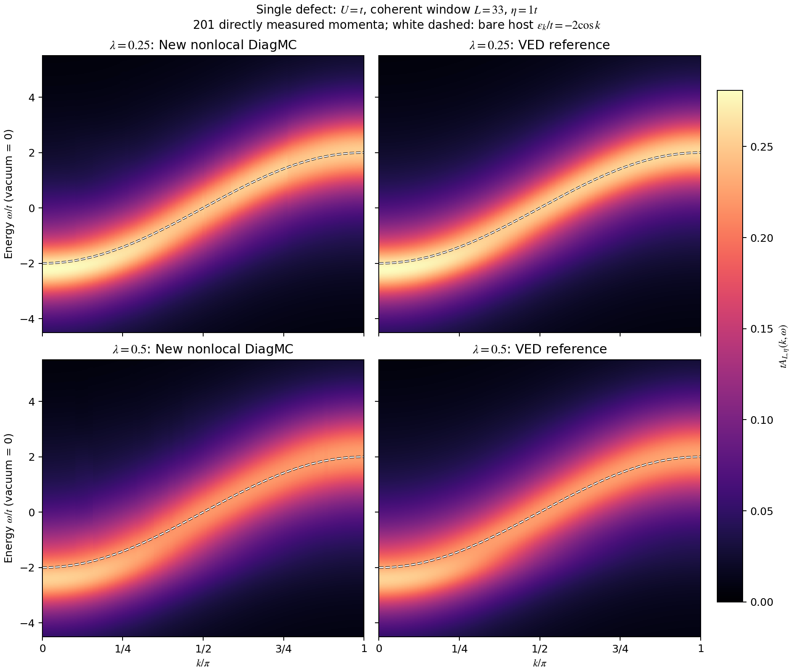

单缺陷 Holstein 模型
1D、零温、单电子；第一阶段只改变一个格点的电子势能。更新：2026-09-23。
实空间 bare DiagMC 已实现，六组束缚态计算完成并与独立 VED 一致。 在相同吸引势下，所比较的较强电子–声子耦合给出更大的束缚能与缺陷处电子密度。 局域谱已完成四倍统计加密，并扩展至33个显示位置；细峰仍需结合下文的 VED 对照和恢复检查判断。
模型和实空间展开
缺陷在 ， 表示吸引势。电子跃迁、声子频率及耦合保持空间均匀。 缺陷破坏平移对称性，因此本轮直接测量实空间传播子：
采用连续时间的实空间图展开：对电子跳跃和电子–声子顶点同时展开，缺陷势通过电子在缺陷处的停留时间精确计入。 与干净体系的固定动量实现相比，电子自由跳跃现在也是被采样的顶点。 这一构造对应 Mishchenko 等的 direct-space DMC 方法；该文研究三维，不能把其临界势强度和耦合归一化直接用于这里的一维模型。
为跳跃次数， 为声子线数， 为电子在缺陷处的总停留时间。 一条声子线的两个端点必须位于同一格点；先后、嵌套和交叉连接均可采样。 电子路径位于无限整数链上，没有用于采样的空间边界。报告中的空间半径只限制直方图，并另设溢出计数。
采样包括增删一对方向相反的跳跃、增删声子线、移动顶点与改变外部虚时间。 利用固定相对顶点位置时的条件时间分布对各时间箱精确积分，并用零跳跃、零声子线扇区归一化。
束缚态能量与准粒子权重
由长虚时传播子的相关拟合得到。表中束缚能使用已有干净体系的 DiagMC 能量相减，误差按独立计算合成；VED 只用于单独比较。 表示低于干净体系带底的束缚态。
包含所有声子构型； 只保留声子真空分量，是局域谱中束缚态极点的权重。 是总零声子权重，与缺陷处密度 、局域极点权重 分别测量。
| λ | U/t | Edef/t | Δb/t | p₀ | Zb |
|---|---|---|---|---|---|
| 0.25 | 0.5 | -2.3000 ± 0.0013 | 0.0713 ± 0.0013 | 0.2890 ± 0.0020 | 0.8531 ± 0.0017 |
| 0.25 | 1 | -2.5064 ± 0.0012 | 0.2776 ± 0.0012 | 0.5206 ± 0.0033 | 0.8102 ± 0.0014 |
| 0.25 | 2 | -3.1715 ± 0.0011 | 0.9427 ± 0.0011 | 0.7733 ± 0.0018 | 0.7271 ± 0.0011 |
| 0.5 | 0.5 | -2.5580 ± 0.0014 | 0.0881 ± 0.0015 | 0.3443 ± 0.0028 | 0.7043 ± 0.0034 |
| 0.5 | 1 | -2.8022 ± 0.0016 | 0.3323 ± 0.0016 | 0.6121 ± 0.0040 | 0.6161 ± 0.0026 |
| 0.5 | 2 | -3.5471 ± 0.0013 | 1.0772 ± 0.0013 | 0.8309 ± 0.0019 | 0.4947 ± 0.0016 |

{kind=link}
| λ | U/t | VED Edef/t | DiagMC − VED | 差异 / 标准误差 |
|---|---|---|---|---|
| 0.25 | 0.5 | -2.3011081 | +0.00110 | 0.85 |
| 0.25 | 1 | -2.5059821 | -0.00040 | 0.32 |
| 0.25 | 2 | -3.1727163 | +0.00124 | 1.11 |
| 0.5 | 0.5 | -2.5570056 | -0.00095 | 0.66 |
| 0.5 | 1 | -2.8025954 | +0.00041 | 0.25 |
| 0.5 | 2 | -3.5475353 | +0.00044 | 0.34 |
当前六组能量与 VED 的最大差异约为1.11个统计标准误差。VED 的小数位用于对照，不代表 DiagMC 达到相同精度。
空间分布与局域化

{kind=link}
在 下， 时电子位于缺陷处的概率约为 0.52； 时约为 0.61。 同时 下降，表示束缚态中声子激发分量增加。更集中的电子密度并不意味着更大的零声子权重。
| λ | 局域 Z₀ | r rms / a | DiagMC ξ/a | VED 同窗口 ξ/a |
|---|---|---|---|---|
| 0.25 | 0.4028 ± 0.0027 | 1.1911 ± 0.0080 | 1.825 ± 0.022 | 1.803 |
| 0.5 | 0.3412 ± 0.0022 | 0.9489 ± 0.0089 | 1.539 ± 0.026 | 1.545 |
这里的 来自虚时中点的零声子投影，长虚时截距另存于原始报告。 仍是有限窗口诊断：向更远尾部移动窗口后，统计量减少、拟合结果发生变化。 完整 JSON 保留三个候选窗口，不能把上表当作已精确确定的渐近局域化长度。
缺陷体系动量谱：201个 k 点
新增结果使用相同参数 、。先完成实空间 VED，再独立重新采样非局域 bare DiagMC。横轴为 ，纵轴为相对真空的能量，颜色为谱强度；白色虚线为裸宿主余弦色散 。
相干观测窗口与动量分辨率
单缺陷破坏平移对称性，k 在这里标记入射探测态。主图采用以缺陷为中心的33格点相干窗口，保留所有非局域传播贡献；电子在传播过程中可以离开窗口。它与33格点封闭链、周期缺陷阵列、对局域谱直接做傅里叶变换的结果不同。
共201点，；能量范围 共1601点，。每个 k 都直接由传播矩阵或端点位移统计求和，没有动量插值。相邻点共享实空间信息与统计误差；33格点矩形窗口的动量宽度约为 ，不能仅凭网格更密宣称物理分辨率提高。
VED 另计算65格点观测窗口。扩大观测窗口会改变物理观测量，并稀释单个缺陷的相对谱重；这与扩大数值边界以检查收敛是两件事。全部图保留绝对谱重，未逐列归一化或平移能量。
VED：含缺陷与干净体系

{kind=link}
{kind=link}

{kind=link}
{kind=link}
独立检查覆盖全部动量：声子云10→12代、电子半径64→96、递推400→800步；另在每组参数的五个动量直接注入余弦/正弦态，检查非局域矩阵重建。声子截断造成的最大整谱相对 L1 差异，在 时分别为0.846%、3.021%、6.749%。更窄展宽图显示截断敏感性，不能当作全部细结构已收敛的证明。
较窄展宽的完整 VED 图：η=0.15t PDF · η=0.1t PDF。
重新采样的非局域 bare DiagMC
新的采样器允许电子起点和终点不同，增加单次跳跃的插入/删除与起点平移热浴更新，直接记录端点位移。两种耦合各8条独立链，每条1.28亿生产步，共20.48亿步；虚时间箱192个，最大虚时12/t。采样顺序在 VED 完成之后，16个进程在 highmem 并行，所有阶数上限触发次数为零。
正式采样前，自由电子、无声子缺陷和原子极限通过24条链的解析检查，最大偏差为2.21个统计标准误差。编译测试检查了详细平衡、奇数跳跃、声子局域性、起点热浴和中途越出观测窗口。已有闭合路径局域谱数据没有被重新标记成动量谱。
延拓使用未展宽谱的精确窗口谱矩与解析能量下界，不输入 VED 极点或谱形。带符号 Green 函数和完整协方差均保留，不裁剪噪声负值。每折留出两条链进行四折选择，比较六种时间、谱网格、块长或协方差设置；各动量完成32次分块 bootstrap，共12864次。16–84%经验范围以所选表示为条件，不包括全部系统偏差，也不是相邻动量的独立误差。

{kind=link}
{kind=link}
DiagMC 图中个别竖直接缝与逐动量的离散选参有关，不能解释为物理能带断裂。这里保留原始重建结果，没有沿动量方向平滑这些变化。

{kind=link}
{kind=link}
动量谱数据与复现
| λ | η=0.15t | η=0.25t | η=t |
|---|---|---|---|
| 0.25 | 6.1%–17.5% | 4.0%–12.1% | 0.3%–1.7% |
| 0.5 | 9.7%–26.4% | 6.2%–15.7% | 0.5%–1.7% |
在 内，未延拓 Green 函数与独立 VED 的最大差异为2.47个保守统计标准误差；这里取多种块长与整链估计中较大的误差。 时两种耦合的整谱差异均小于1.75%。这些检查支持采样与宽谱形的一致性，不能证明细小峰已经分辨。
误差在展示能量窗内积分；截断、统计噪声和延拓偏差都可能贡献差异。新的 DiagMC 窄峰尚未通过定量分辨率验证。完整数据保留未延拓的 Green 函数、不同块长误差、候选方案与 bootstrap 权重。
- VED, λ=0.25, U/t=0: NPZ
- VED, λ=0.25, U/t=1: NPZ
- DiagMC, λ=0.25, U/t=1: NPZ
- VED, λ=0.5, U/t=0: NPZ
- VED, λ=0.5, U/t=1: NPZ
- DiagMC, λ=0.5, U/t=1: NPZ
- 动量谱检查与误差 JSON
- 观测量、优化与复现说明
- highmem 作业记录
- 发布文件大小与 SHA-256
- 完整源码、原始链、VED递推与延拓结果发布包
VED NPZ 的 A_W16、A_W32 分别对应33和65格点窗口；DiagMC NPZ 的 A、A_ved、bootstrap_16、bootstrap_84 均按 (eta, k, energy) 排列，形状为 (5,201,1601)，eta=[0.1,0.15,0.25,0.5,1]。网页使用清晰的 PNG 预览；链接提供原始矢量 SVG/PDF 与数值数组。
加密局域谱图：位置 × 能量 × 谱强度
本轮优先加密单缺陷局域谱：每种耦合独立测量 共17个位置，反射后显示33列；位置间不插值。横轴为格点，纵轴为相对真空的能量，颜色为绝对强度 。增加位置扩展了空间范围，格距仍为 。
每个位置由4条链增至8条链，每条生产步从1600万增至3200万；每个位置的生产统计增至四倍。虚时间箱从96增至192，；绘图能量点从801增至1601。能量网格加密和减小展宽本身不代表真实谱峰分辨率已经提高。
白色虚线为裸电子连续带边界 ，蓝色虚线为 时单缺陷的束缚能 。局域谱横轴是位置；余弦裸电子色散 已加到干净体系的动量谱主图中。

{kind=link}

{kind=link}

{kind=link}
| λ | η=0.15t | η=0.25t | η=0.5t | η=1t |
|---|---|---|---|---|
| 0.25 | 5.3%–15.4% | 3.3%–11.1% | 1.4%–5.2% | 0.4%–1.4% |
| 0.5 | 4.6%–30.2% | 2.8%–22.0% | 1.2%–11.2% | 0.4%–3.6% |

{kind=link}
在相同的时间箱和块长下，原有九个位置的 Green 函数相对统计误差，新/旧比值的逐位置中位数为0.46–0.55。增加统计确实降低了测量噪声，但逆拉普拉斯变换仍会放大误差。图中差异同时包含新增数据和延拓方案变化的影响。
细谱尚未通过定量分辨率验证。新的窄峰图仍应结合候选方案敏感性、bootstrap 范围和 VED 差异阅读；不能仅凭更细的图像确认新激发。
延拓、交叉验证与误差
最大熵延拓使用上述局域谱矩和解析下界；后者由声子项配方及无声子缺陷哈密顿量的最低能量得到，无需 VED 极点先验。主设置为641个谱支撑点，上界10t；另比较321点、上界14t、时间箱、时间窗、块长和协方差截断。旧的321点非负平滑重建也作为候选，保留原来的较松下界。
每折留出两条独立链，四折使用相同验证时间箱和协方差规则。每个方案选择位于最低平均分数一个折间标准误差以内的最大正则化参数，再按所选分数选择方案；所有选择在 VED 对照前冻结。这是模型选择启发式，不是分辨率或置信区间保证。
每个位置完成64次分块 bootstrap，共2176次；在固定方案内重新选择正则化参数，保存逐点16–84%经验范围。候选方案的谱与分数、多种块长及整链误差均可下载。这些经验范围不包括全部谱网格、支撑上界和方案选择偏差。
已知谱峰的恢复检查
使用满足精确局域谱矩的人工单峰与双峰谱，分别加入由新旧数据测得的相关噪声。两种噪声水平采用相同的641点最大熵表示及留出链选参；双峰间距测试0.3t、0.6t和t，每例16次。该检查不使用 VED 的峰形；固定协方差和有限重复次数限制了它的适用范围。
| Δω/t | 旧噪声 | 新噪声 |
|---|---|---|
| 0.3 | 0/64 | 0/64 |
| 0.6 | 0/64 | 0/64 |
| 1 | 0/64 | 0/64 |
单峰对照被误分裂的次数：旧噪声0/64，新噪声0/64。成功判据要求窗口内恰有两个足够突出的峰，且峰位分别距设定值不超过0.10t；完整设置与逐次结果见下载文件。
已完成的验证与误差范围
C++ 更新核和20项 Python 测试通过。独立采样验证了自由电子、无声子耦合的缺陷、原子极限，以及限制为一条声子线或一对跳跃的展开。 原子极限还验证了有限虚时中点的零声子概率和声子数，避免只用基态能量检查采样。
无声子耦合的一维吸引杂质给出可解析的基准：
VED 将电子绝对位置与相对声子云分别截断。基态比较声子云生成代数8、10、12，再扩大电子半径；能量随两项最终截断变化均小于 。 加密局域谱在全部17个位置比较10→12代、半径40→64及 Lanczos 200→400步；覆盖四种展宽的最大谱差异依次为0.687%、0.00493%和0.0157%。这是收敛差异，不是无限基底误差的严格上界。
每个基态工作点使用8条独立链，每条3200万生产步； 的最大投影时间分别为 。 比较三个长虚时窗口，并采用多种块长及独立链 jackknife 中较大的统计误差。 VED 能量仅用于设置辅助采样位移 ，没有固定 DiagMC 拟合中的能量或权重。 统计误差不等于全部投影偏差的上界。
初版共148条链、28.16亿生产步；三个 highmem 作业均在 b000 正常完成。 逐链参数、块数、随机种子、源码与可执行文件哈希已检查；生产计算的阶数上限触发次数为0。
| 阶段 | Job ID | 链数 | 运行时间 |
|---|---|---|---|
| 先导与解析检查 | 20881037 | 28 | 31秒 |
| 六组基态扫描 | 20881090 | 48 | 5分52秒 |
| 局域谱与参考检查 | 20881164 | 72 | 5分55秒 |
新增采样为272条链、87.04亿生产步，highmem 作业20882157耗时2分35秒。采样器通过同种子轨迹与 Green 函数逐位一致性检查，所测用例提速约1.64–1.68倍。内存复用、特殊函数复用和精简观测输出减少单链开销；独立链和位置并行运行，每个数值进程使用一个 BLAS 线程。
数据、代码与复现
加密结果、完整选择诊断和恢复检查均已保存；原基态结果与旧版发布包仍可追溯。
- DiagMC, λ=0.25: NPZ · η=0.25t CSV (gzip) · η=0.15t CSV (gzip)
- VED, λ=0.25: NPZ · η=0.25t CSV (gzip) · η=0.15t CSV (gzip)
- λ=0.25: 候选谱、旧谱与参考截断差异 NPZ
- DiagMC, λ=0.5: NPZ · η=0.25t CSV (gzip) · η=0.15t CSV (gzip)
- VED, λ=0.5: NPZ · η=0.25t CSV (gzip) · η=0.15t CSV (gzip)
- λ=0.5: 候选谱、旧谱与参考截断差异 NPZ
局域谱 NPZ 的 A 轴为 (eta, site, energy)，形状 (4,33,1601)，eta=[0.15,0.25,0.5,1]。DiagMC 文件含 bootstrap_16、bootstrap_84 和17个独立测量位置 measured_sites。范围为 −4.5t 至5.5t，每列保持绝对谱重；没有逐列归一化或能量平移。
本轮源码、原始链、传播子和全部 bootstrap 下载 · 发布包大小与 SHA-256 · 保留的初版发布包。
所有新 ZIP 解压至同一父目录，共用 holstein-diagmc/ 根目录。脚本拒绝覆盖既有结果；复算时使用新的输出目录。矢量图仅合并色标下颜色完全相同的相邻格块，已验证颜色逐格一致，未平滑谱数据。